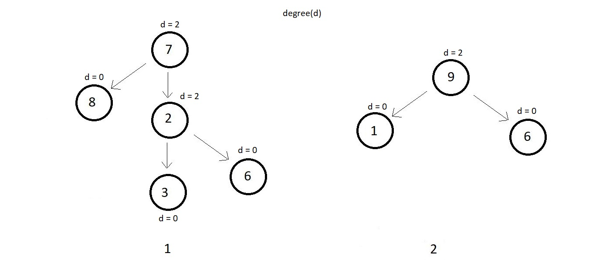
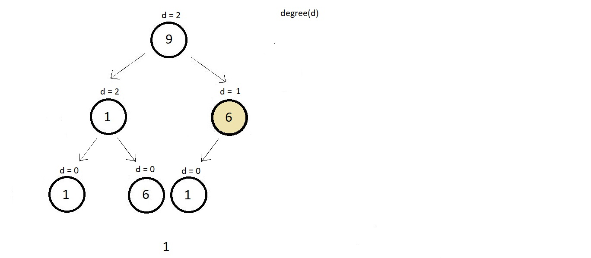
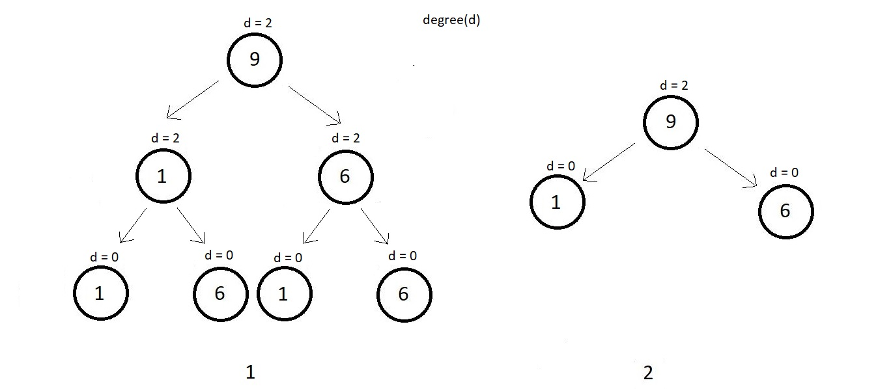
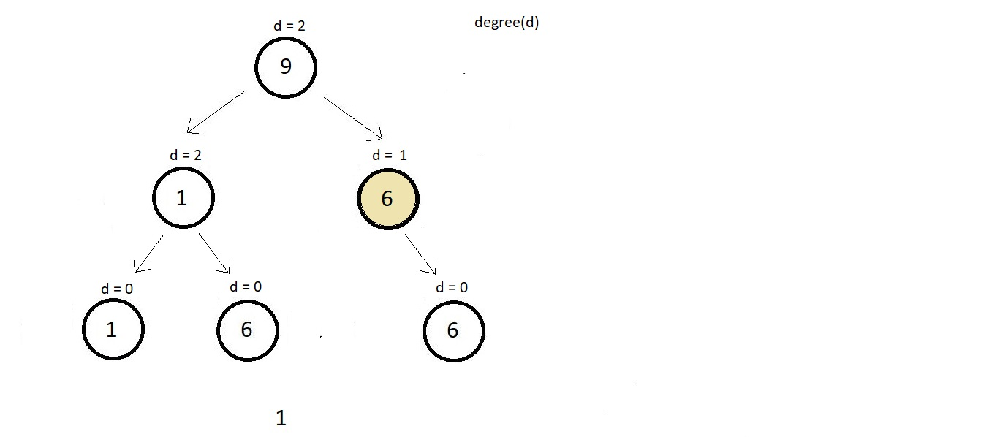
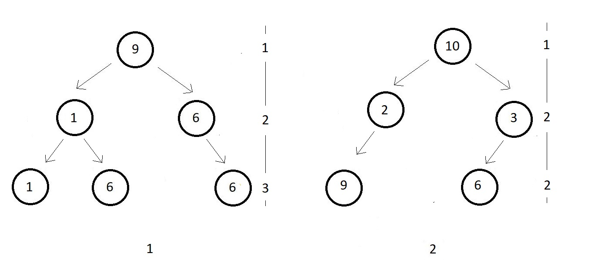
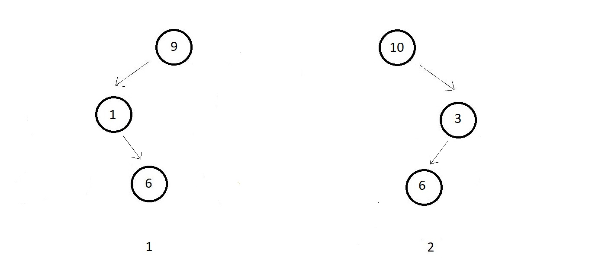

Strict binary tree is having all of its nodes with a degree of 2 or 0. That is each of its nodes
either have 2 children or a leaf node.
Simple example ↓

Bellow illustrated is a binary which is not a strict or full binary tree because the colored
node has a degree of just 1.

A perfect binary tree has all its internal nodes with degree strictly 2 and has all its leaf nodes
on the same level. A perfect binary tree as the name suggests appears exaclty perfect. Few examples
below.

Every leaf node above in both the examples are on the same level and all the internal nodes have
a degree 2. Below illustrated is a binary which is not a perfect binary tree because the colored
node is an internal node and has a degree of just 1, although each leaf node is on the same leve.

Below illustrated are some non-complete binary trees

In both the figures, the last level is not complete. And hence we check if all the nodes are
algined to the left. But they aren't in both cases. And hence both of them are not complete.
Few examples below
